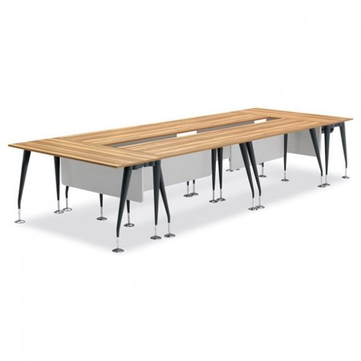

오프셋퍼니처 · W1800×D600×H720 (1200/1400/1600/1800 선택)
TFS/가이아 일자 연결식 테이블
269,500원 (계산값)
퍼스트사무용가구 기본 238,700원 + W1800 옵션 +30,800원. 배송비 별도(착불 0원 표기). 동서가구 판매가 275,000원(쿠폰가 247,500원)도 확인. 확인일 2026.11.01
- 크기
- 1800×600×720mm
- 좌석
- 3인(좌석당 600mm)
- 연결
- 일자 연결식(기둥 사이 연결)
- A/S
- 1년(동서가구 표기)
1800 옵션가는 퍼스트 페이지 기준 계산값바퀴 없음·고정형
사진: 동서가구 상품 이미지